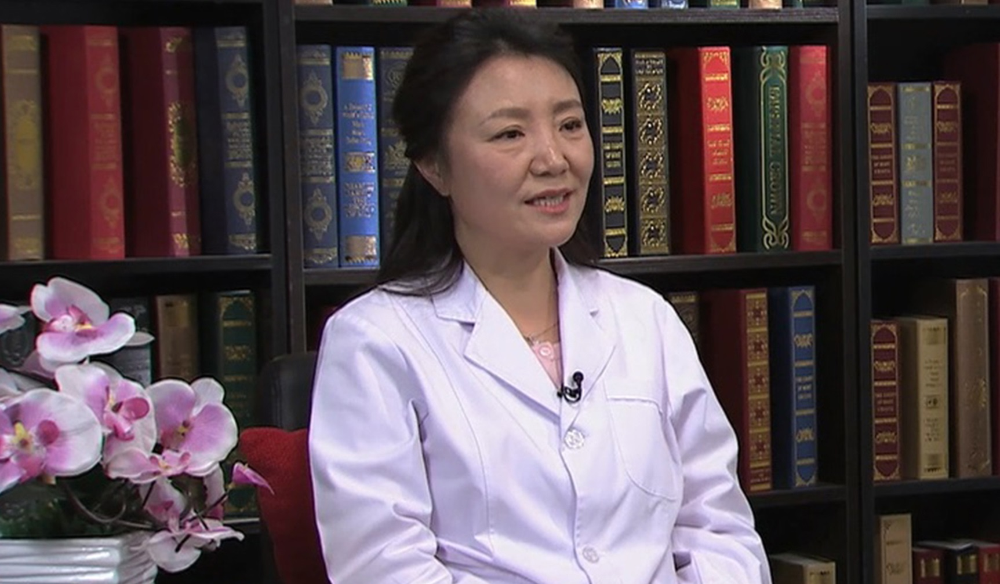

1.90 围产期脑卒中¶
高婉丽 主任医师¶

首都医科大学附属北京天坛医院 产科主任 妇产科副主任；
中国医师协会妇产科医师分会母胎医学专业委员会委员；中西医结合妇产与妇幼保健分会委员；北京医学会围产医学分会委员；北京女医师协会第四届理事；北京市医疗事故鉴定评审专家；《中国计划生育和妇产科》杂志编委。
主要成就： 致力于产科危重症抢救、妊娠合并颅脑疾病的基础与临床研究，关于妊娠合并颅脑疾病的系列研究获得多项奖励和资金支持；发表SCI论文10余篇，累计影响因子20分，中文核心期刊论文30余篇。
专业特长： 擅长各类产科疾病的诊治、高危妊娠的管理及危重症抢救。作为北京市妊娠合并颅脑疾病抢救中心的产科负责人，在妊娠合并脑卒中、妊娠合并颅脑肿瘤等方面具有丰富的抢救、诊治经验。
围产期脑卒中是怎么回事？¶
我觉得您提一个特别好的一个问题，围产期在不同的国家，可能定义是不完全一样的。
那我们国家把妊娠28周到产后7天之内，这一段时期称为围产期。对于一些发达的国家，他可能把妊娠28周到产后42天之内都称为一个围产期。脑卒中一般认为，是脑循环发生一个突然的一个障碍，出现的一系列的一些症状和体征。
围产期的脑卒中，主要是说对于孕妇妊娠之后，到产后7天之内，这一系列的脑卒中的这些症状体征发生之后，我们才称为一个围产期的一个脑卒中。
它发病率比较低，但是死亡率和致残率还是比较高的，国内外的统计的数据，不完全一致。总体来说，如果一旦发生的话，可能死亡率，会占到整个发病人群的1/4，致残率，也有可能会将近一半。
所以对于围产期的脑卒中，我也希望通过你们的节目的一个参加，来提醒公众，对这一个严重的疾病的一个认识。因为围产期脑卒中，早期的症状不是特别典型，容易被医生甚至孕妇本人所忽略。一旦等症状比较严重了，也可能就失去了挽救她生命的一个机会。
有些人如果就诊比较晚，或者疾病状态比较重的话，即使有些人生命挽救了，但会遗留一个终身的一个残疾。所以对于围产期的脑卒中，不仅需要我作为一个产科大夫，我们这样的同行，来给予足够的重视，也希望就是其它别的科的医生，甚至是说我们社会公众对这个病，有一个很好的了解。
这样会大大降低我们国家孕产妇，因为围产期脑卒中这样一个严重的疾病，导致的一个死亡，或者是导致的一个致残，从而来提高我们整个国家国民的一个素质，另一个比如说胎儿早产的机会的降低，导致的这些新生儿的异常。
有的孕妇为什么可能会出现围产期脑卒中？¶
因为脑卒中，实际上在医学上，脑卒中会分为两类，一类是出血性脑卒中，一类是缺血性脑卒中。
对于孕产妇来说，她缺血性脑卒中主要两种，一种是脑梗死，一种我们叫做静脉窦血栓。对于孕妇来说，一般来说脑梗死她多数都合并有，比如说有严重的高血压，会有一个高血压导致一个出血性脑卒中，和一个脑梗死导致一个缺血性脑卒中，两种情况同时伴随。
但是对于出血性脑卒中，它的发病原因主要有两类：
一类就是这个孕妇本身可能有些先天性脑血管的异常，但是她在非孕期的时候没有及时的发现，然后妊娠期间因为某些机制，导致她这些血管的异常，然后（就有）一些出血的一些呈现； 还有一部分人，就是因为到妊娠中晚期，她会有一个严重的高血压，也就老百姓所说的妊娠期高血压，或者是一个慢性高血压，导致她一个颅内出血。
所以脑卒中，我们会根据它的病因，临床上治疗时手段是完全不一样的，而且它所有导致脑卒中的因素是完全不相同的，所以老百姓认为的一个脑卒中，只是一个笼统的概念。一旦诊断脑卒中，作为普通民众，就要知道它就是严重威胁生命的一个疾病，需要立刻到医院去来看。
对于孕产妇来说，她会有一些特殊的一个生理改变，会导致一个脑卒中发病率要比普通人群稍微高一些。比如说静脉窦血栓，它是导致一个孕产妇缺血性脑卒中一个很重要的因素。
女性或者妊娠期，或者是产褥期，本身就已经被我们整个医疗界定义为一个脑卒中的一个高危因素。所以对于孕产妇来说，无论她在妊娠期间还是产褥期，她都是脑卒中的一个高危人群。
一旦她出现一些非特异性的症状，我们比如说头痛，比如说和你的本身状态没办法解释的一个严重的一些呕吐，不要当成是一个妊娠期间，可能别人也都出现这样症状而忽略。
另一个就是一旦发生不明原因的抽搐，千万别都想是可能就癫痫发作了。其中有一部分人群有可能就是一个脑卒中给你的一个信号，所以对于这些非特异性的症状，提醒大家给予一些足够的重视。然后及时到医院去就诊。
（采访）是不是孕期她的这个凝血的一个系统，也会发生改变？
一般来说，妊娠期间，是一个血液系统逐渐变为高凝的一个时期。因为人体在整个孕育过程中，会发生一系列的生理变化，比如说人怀孕之后，她到她分娩这期间，都会有一个生理性的体重增加。同时血液系统也会发生一系列的变化，比如说血液容易变成一个高凝的状态，这种高凝的状态，是有利于人类在分娩的这一刻有利于她止血。
但这种高凝的状态相对来说，也有它的弊端，那就有可能导致一些血栓性类的疾病的发生，比如说跟我们脑卒中相关的静脉窦血栓，有可能就跟她这种高凝状态是相关系的。还有一部分人高凝的状态，也容易导致她一些其它别的地方的一个血栓形成。
对于脑部来说，目前认为静脉窦血栓可能就跟这种高凝是有关系的。
另一些出血性的脑卒中，或者一些脑梗死，有可能还有其它别的原因的存在，然后导致她脑卒中的一些出现。
剖宫产会增加孕妇围产期脑卒中的发生吗？¶
对于孕妇来说，你做手术产（剖宫产）是不是就一定加重她脑卒中的一个发生，现在来说还没有说一个确切的证据来一定支持。但是作为医生来说，我们知道因为手术产它一般来说，就是手术的一个打击。
另一个，加上她卧床的时间要相对增加，那她血栓性疾病的发病率的确是增加的，比如说下肢的静脉血栓，比如说肺栓塞，相对应的有可能她会有脑卒中的一些病例的一个增加。
但是对于统计学意义来说，目前还没有一个特别好的一个大样本的多中心的一个数据，就来支持说的一定剖宫产，会增加她脑卒中的一个发生。
（采访）这个还有待研究。
对。
为什么孕妇高血压容易出现围产期脑卒中？该如何处理？¶
一般来说，血压高的人分为两种，一种可能跟妊娠相关的血压高，我们叫妊娠期高血压，妊娠期高血压，我们是这样定义的，就是比如说她以前没有高血压，但妊娠20周之后发现血压升高，超过140/90mmHg，这时候我们会定义一个妊娠期高血压。
那还有一部分高血压，就是说她在没有怀孕的时候，本身这个病人就有高血压，对于我们产科来说，我们就定为她是一个慢性高血压人群。
无论（是）妊娠期高血压的人群，还是一个慢性高血压的人群，如果她的血压控制不良的话，就容易导致她一个妊娠期的一个脑卒中。其主要的发病机制，一般认为是有两种：
一种就是血压高，导致她一个血管内皮的一个受损，这样的话她就会有一些血液，就通过血管壁，然后有一些渗出，就容易导致她一个脑水肿；
还有一部分就是说，如果她血压高到一定的程度，或者是一个极具的血压的一个波动，超过一个脑血管的自我调节的一个机制，如果它血管受损的话，她就容易发生严重的一些血管壁的一个改变，这样的话就会导致她一些血管容易破裂；
另一个脑血管，还和周身血管还有一个不同的地方，就是脑的血液循环，它有一个自我调节的一个机制，也就是说在你血压比较平稳，不是很高的情况下，它自己会通过脑血流自我调节的机制，来分配你这个血液循环，但是如果你突然的急剧的血压升高，超过她脑血流的一个自我调节机制，这样的话就会导致她脑血管又破裂。
所以在一个受损的血管壁的一个基础上，因为血压的一个系列的波动，或者一个血压的过度的高，超过它血流的这个自我调节机制，又发生一个什么呀？
脑血管的破裂，甚至对一些慢高的病人，如果她在没有发生脑卒中之前，那我们可能去做检查，就会发现她本身就会有一些微血管瘤，这些微血管瘤到妊娠后期，受某些因素的影响，她的血压进一步升高，或者微血管瘤长到一定的程度，它就有可能也有自发破裂。
所以对于高血压的人群，尤其她在妊娠的中晚期的时候，她特别容易发生脑卒中，也就在这里提醒公众：
如果在您非孕期本身是一个慢性高血压的人群，一定要在心血管内科医生的帮助下，把血压降到一个合理的范围之内，然后再去妊娠。
但是对于已经妊娠的这样的一个孕妇，我们一般来说会给她一个合理的降压药的一个应用。
这个降压药，我们既要兼顾这个孕妇，保证她的血压平稳，然后下降到一定的程度。
另一方面，我们还要兼顾这个胎儿，所以降压药的选择，既是我们产科要关注的。
另一方面，我们还会跟心血管内科的医生的一个合作，一个是让她整个孕期血压在控制在一定的合理的范围之内。
另一方面，也要就是说兼顾她的分娩方式。
那如果就是说血压特别高的人群，作为产科医生，我们可能就要慎重的选择，她要不要做引导的生产。
那一般来说，如果血压控制不了，或者进一步的有发生脑卒中的这种信号，比如她有剧烈的头痛，头晕，或者我们做一个影像学的判断，比如做一个核磁共振，已经脑水肿很厉害了，她随时都可能发生抽搐，有可能我们就称为子痫的这部分人群，那我们就要考虑，比如说做一个剖宫产来及时的终止妊娠。
子痫和癫痫是一回事吗？¶
子痫一般来说就是会认为是它在原来高血压的基础上，或者是说没有及时的发现高血压，但是因为某些因素刺激她发生老百姓所说的抽风，实际上我们临床上就是一系列的一些表现，比如说她突然发生一些肢体的抽搐，病人当时，突然出现一些憨睡等等，这种，我们就叫做子痫。
对子痫的病人来说，实际上就跟老百姓所理解的癫痫，有的地方是有一样的，比如说当时她在抽搐的时候，是出于一个脑部严重的缺血缺氧的一个状态。
但它也有跟癫痫不完全一样的地方，就子痫的病人，一般往往她会在脑水肿的基础上，会并发一个严重的，因为抽搐发生一个脑出血。
也就是说，她子痫的病人，对于脑卒中这部分人群来说，她往往会既出现一个缺血性脑卒中，也会同时出现一个严重性的出血性的一个脑卒中。
但是对于癫痫的病人，她可能抽搐的时候，因为是一个脑部的一个异常放电，所以她都会有一个一过性的严重有脑部的缺血缺氧，但是其实它基本的病理变化是不完全一样的。
一般子痫，因为它多数是在妊娠中晚期的一个发作，多数是会在病人的家里，包括在我们的产科病房，甚至会在产床上，所以癫痫的病人，一般来说，她会面对的神经内科的一些病人。但是实际上子痫，主要是由我们产科大夫来面对这样的病人会更多。
当然，对于院外的一些发作的病人，有的时候，老百姓就马上看到这边抽了，她所认为就叫抽风，但是的确是很难。
对于孕妇来说，当她就是首先呈现在眼前，就是一个抽搐的人群的时候，即使作为一个专业的医生，比如说我们请急救120或者199到家里，一旦发生抽风，当时对于这样的医生，他也很难判断，她一定是子痫，或者一定是癫痫。
但是我们要做的第一件事情先比如说测这病人生命体征，生命体征就包含什么？
包含测她的血压。如果一个血压比较高的一个人群，然后我们当时看着产妇，比如说出现一个严重的一个面部，或者是脚踝的一个水肿，也就是说，我们判断可能是一个妊娠期高血压的这样一个人群，一般来说，我们会认为她可能子痫的，就是这种可能性会更大一些。
但是另一个，它两个就是说癫痫和子痫，她一旦抽搐的话，实际上它俩的表现是不完全一样的，两个虽然都同样地抽搐，但是其实面容是不完全一样的，一般癫痫的人的抽搐，她都会什么口吐白沫，然后突然急骤的一个发作，病人当时是完全没有自主的这种意识。
但子痫的人来说一般的抽搐，她多数会有一个前驱的一个症状，为什么？因为她往往是先出现一部分脑水肿，然后才出现一个严重的子痫的一个发作，所以这样的人反过去，你再去追问，她往往在她抽搐之前，她都会有什么？严重的一个头痛或者一个头晕，甚至有些人会出现一些视物模糊。
所以子痫的人，往往她在抽搐之前，她有一些前驱的症状，但是癫痫有的时候是没有特别明显的一个前驱症状。
癫痫有些人，会有一个固定的抽搐的一个发病诱因，比如说现在我门诊的有一个产妇，她本身就是一个癫痫的孕妇，她往往她会在什么时候会发作？比如说她生气，比如说她饮酒，或者她熬夜的时候，也就是这些诱发因素会导致她癫痫的一个发作。
但子痫一般往往都会是，当她原来本身就有血压高的情况下，突然发生一个血压的急剧增加，然后这时候她会出现，比如说有点头痛、头晕，或者是看东西不是特别清楚。如果这时候她没有及时到医院去就诊，没有给她一个合理的降压或者脱水肿的一个治疗，她就容易发生一个子痫的一个发作。
围产期脑卒中有哪些类型？¶
围产期脑卒中，一般在医学上会跟其它脑卒中的分类是一样的，一般我们会分为一个缺血性脑卒中，另一个会分为出血性脑卒中。跟孕产妇相关的缺血性脑卒中，多半以静脉窦血栓为第一位，然后极少数的脑梗死。
那一般脑梗死，往往会伴随有什么呀？比如说她颅内血管的一些病变，比如颅底血管，比如说我们临床上常常叫的一种特别好听的这种名字的病，就叫烟雾病，也叫moyamoya病。
这个病，它是一个颅底血管的一个异常，她的血管，会和我们普通人血管不一样。也就是说她在做造影的时候，她的颅底血管就跟男同志吸烟，然后喷出那个烟丝那种情况，所以它叫做烟雾病，这个病就容易导致她脑缺血，导致一个脑梗死，所以这个病是导致孕产妇脑梗死很重要的一个疾病。
出血性脑卒中，一般来说，跟孕产妇相关的，主要有两大类：
一类就是高血压的一个基础上发生的一个出血性脑卒中；
另一类就是她本身脑血管有异常，比如说脑的血管发育畸形，比如说动静脉畸形，动静脉瘘等等。这些人群，也就因为脑血管异常导致的这种出血性脑卒中，是占出血性脑卒中，尤其对于那些非高兴血压人群来说，它是最主要的一个原因。
（采访）所以出血性的比例是高于缺血性。
目前没有一个很好的一个证据来说明出血性的脑卒中就一定高于缺血性脑卒中，因为妊娠期脑卒中是散发的一个病例这种更多，因为它的发病率不是很高，所以目前还没有一个特别好的一个多中心的荟萃的一个研究，来说明到底出血性脑卒中（发病率高），还是缺血性脑卒中的发病率更高。
随着这些年对于脑卒中这一类病的就重视，也就是说，比如我们天坛医院吧，我们这些年一直是专注于脑卒中的这方面的一个研究。
也因为脑卒中这方面研究有一些特殊的贡献，王英俊院长率领的团队，今年还被评为一个全国科技进步二等奖，所以我们对于脑卒中这方面，整个医院来说，是研究还是在全国是比较名列前茅的。
相对应的，我们的孕产妇脑卒中的研究，也取得一些可喜的进步，但是有关孕产妇的这种脑卒中的数据，还是比较少的。
另一个因为我们国家地域比较宽阔，然后人民的这种就医和经济条件都不完全一样，所以有些是一些脑卒中的病例，但是她没办法到一些脑卒中中心得到一些更有效的及时的治疗，所以有关这方面的数据，我们国家还没有一些多中心的一些研究。
所以我也希望通过像你们这样的一些媒体，让就是其他别的科的医生，包括孕产妇的本人，对这样的病有一个很好的认识，一个就是说就诊不会特别盲目，不至于延误她的就诊，这样的话就会提高这样的疾病的一些识别。
另一方面，也为我们国家脑卒中这方面的研究，有可能会提供一些更好的多中心的数据，以此来得到我们国家这些人群，她脑卒中发病的一些流行病学的资料。
围产期脑卒中能早点被发现吗？¶
实际上，缺血性脑卒中和出血性脑卒中，有些症状的表现基本上差别不是特别大，因为无论是出血还是缺血，它影响的都是一个脑部的供血和供氧。但是它的症状的确有的时候是不是特异性的。
那对于孕产妇来说，有些人就可能有点轻微的头晕，头痛，有的时候是难免的，因为妊娠后的一个妊娠反应。还有一个妊娠后，会伴随有一个身体负担的一个加重。
如果她平时工作也比较疲劳，比较紧张，那要休息不好的话，再加上怀孕后，每个人都有可能有不同程度的焦虑，因为她会担心，比如说这孩子会不会好？我整个妊娠会不会就顺利？
妊娠期和产褥期也是一个抑郁症发病的一个高发的时期，所以有些人这种头晕，头痛，我们临床上叫做什么呀？非特异性，如果您经过休息，或者是说，把你原来这种焦虑，能稍微有所改善之后，您持续性的头痛，就要考虑有可能是一个脑卒中的早期表现。
比如说我接触的一例患者，她在她出现昏迷之前，她就出现头痛，能长达多长时间？一周多，但是她去一些综合的医院去就诊，因为在妊娠早期，这头痛，轻微的恶心呕吐，就认为她可能是妊娠反应。
晕因为老百姓都知道，在早孕期间，会有我们叫妊娠反应，比如说会有一些恶心，呕吐，甚至有些人会有点头晕，头痛，甚至有人不明原因的突然晕倒，这些症状，它表现为都不是特异性，所以就容易被医生所忽略。
所以就是说出血性脑卒中，或者失血性脑卒中，往往早期有些（患者），会有一些非特异性的症状，就比如头晕头痛，恶心呕吐，会有些人有轻微的视物模糊，甚至我曾经接触一些病人，她会有什么呀？比如说一侧眼睛睁不开，也就抬眼无力。
其实这种抬眼无力，如果她要及时的就是说去就诊了，神经科大夫就马上会评估，她可能是一个动眼神经的麻痹，但作为孕妇来说，或者非神经科的专科医生来说，有可能就认为她可能疲劳了，比如最近可能是不是累了，所以这侧眼睛有点睁不开，也就把她这些症状可能会有所忽略。
但是一旦病人突然出现一个严重的抽搐，或者是说一旦出现意识障碍，比如这病人开始嗜睡了，甚至有点昏迷了，你再叫她都不醒了，这时候到医院往往都是脑卒中比较严重的一个状态了。 还有一部分脑卒中，是因为它的发病部位不一样，她会出现一侧肢体的，比如说偏瘫。
我们好多来就诊的病人，往往她都出现这侧腿不能动了，或者这一侧手不能动了，或者整个这一侧肢体都出现无力行动障碍，她才来医院就诊，这样的人群，可能最后你去做一个相应的神经系统一个查体，才发现她可能是因为脑卒中导致的这些严重的这些表现。
所以出血性脑卒中和缺血性脑卒中，并不是像老百姓所说的，只有脑出血了才是致死的。但事实上对于孕产妇来说，严重的静脉窦血栓，死亡率还是很高的。
作为我们天坛医院来说，我们是一个北京市的妊娠合并颅脑疾病的一个抢救中心，几乎我们每年都会因为有静脉窦血栓导致的孕产妇死亡。
因为有些静脉窦血栓，它的发病原因到目前来说还不是特别清楚，对于一些妊娠期的静脉窦血栓，它的死亡率往往是很高的，而且在我们救治的体验中，就是妊娠期的静脉窦血栓，有的时候往往会死亡率高于她的产褥期，也就是说分娩后老百姓所说的这种哺乳期她的静脉窦血栓。
但是它这种高死亡率目前来说，我们虽然做了一些系列的相关检查，但是确切的病因只能是说一些假说，比如说跟她妊娠期间的这种高雌性激素的一个改变，还有一个跟她妊娠期间这种高凝状态（有关），但是所有这些因素，每一个单一因素都无法来解释，她到底妊娠期，为什么这些静脉窦血栓的人群，她的死亡率要远远的高于她的产褥期。
那我们在抢救静脉窦血栓这样的孕妇（时），我们还有一个这样的一个体会，就是说她的血栓形成速度是非常快的。
我们曾经有一例孕妇，她来我们医院实际上已经是昏迷了，为了救治她的生命，我们在溶栓的同时，然后做介入下的治疗，介入下的治疗也就是说，进去一个特殊的仪器进她脑血管里，然后把她已经形成的血栓试图给她勾出来。这也是现在血栓性疾病最先进的一个介入治疗手段。
介入科医生就跟我谈，就是说你这面把血栓慢慢勾出来，你就看到她其它的地方很快随着就又形成新的血栓，所以不是说缺血性脑卒中就一定比出血性脑卒中愈后好，而是要分不同的人群，分她不同的发病部位，另一个，要分它整个这个脑卒中对她脑功能的影响到底有多大。
围产期脑卒中有哪些症状？¶
围产期脑卒中它的症状，不完全一样，就是因为大脑是人体很重要的一个生命中枢，它不同的部位，它这个生命中枢的作用是不一样的，比如说有些内囊的脑卒中，它可能就出现什么呀？一些它相对应的改变，总体来说，脑卒中跟孕产妇相关的这些症状，我们大概可以分为以下几类：
一个就是非特异性的症状，比如说头晕，头痛，另一部分人会有恶心呕吐，还有一部分人，会出现什么？意识的障碍，也就是说她会出现昏迷嗜睡。
当然了，如果这个病人出现一个严重的深昏迷，或者是说你呼之不应，这时我们老百姓都会有这意识，及时把这个病人送到医院，但是往往前面这些非特异性症状的时候，有些人，是意识不到的。
另一部分症状，跟她所支配的这种神经的这个靶器官的活动受限有关系。比如说一侧肢体的偏瘫，比如说动眼神经的麻痹，比如她失语等等等等。也就是说跟她支配的神经的功能不一样，受损的地方不一样，她的症状表现是不完全一样的。
但是如果我们对这样的症状有所警醒，及时去请一个神经科大夫来给这个孕产妇做一个会诊，多数神经科的医生会很快识别她这些症状，根据这些症状，做一些有针对性的检查，会很快的做出一个正确的判断。
围产期脑卒中需要做哪些检查？¶
如果怀疑围产期的脑卒中，首先建议一定要请一个专业的神经科医生来做一个评估，也就是说评估你这个病人，可能是不是脑卒中？另一个她现在是脑卒中，她的严重程度会是什么样的？
另一个要做一些适当的辅助检查。对于脑卒中来说，尤其对孕产妇脑卒中，一般临床上最常用的两种检测手段，一个就是核磁共振，另一个就是做CT检查。
核磁共振，实际有些医院会有，对于某些医院，它可能整个医院都没有核磁共振。但是CT的检查，随着我们国家现在经济水平的提高，多数的医院会有一个头部CT的检查，甚至是说急诊的CT检查都是全天候24小时都是能够做到的。如果医院有条件，首先推荐做一个核磁共振。
因为核磁共振它是用一种磁场来做一个成像，所以它没有电离辐射，它不是说我们平时所说照一个胸片，甚至说我们现在做乳腺的钼靶，这是有X线作用，然后才成像，但是核磁共振它是利用一种磁场，它没有射线。所以妊娠期间，如果我们怀疑有脑卒中，一般来说我们会首选做什么呀？
做无创的检查，这无创的检查是什么？就做核磁共振，而且核磁共振对于颅脑的这个病变的这个筛查率还是很高的。也就是说对于脑卒中的人群，如果我们做一个核磁共振，多数的脑卒中就会被核磁共振成像下面很清楚地显示，甚至你脑卒中的部位，你脑卒中可能的原因。通过这个核磁共振成像的片子，有经验的医生，就会把你的病因有彻底的一个分析。
如果医院有CT没有核磁共振，但是如果神经科医生对这个孕产妇做一个很好的评估，认为她脑卒中的可能性很大，不妨做一个CT检查。对于孕产妇来说，我们一般做头部CT的话，我们都会对胎儿进行保护,也就是说在孕妇的腹部会搁一个铅板，来抵挡这个可能做头颅CT的时候，这个射线对胎儿的一些影响。但是总体来说，核磁共振是无创的，我们认为对胎儿的影响几乎是为零的，但CT是达不到这种程度。
另一个为了明确诊断的话，作为神经科医生，他们会做核磁共振下，或者是CT下诊断脑卒中之后，然后他会分析脑卒中的原因，会做一个叫血管造影。血管造影的话，一般认为就是因为操作时间比较长，而且有电离辐射，除非有特别严格的指征，这个孕妇才考虑去做脑血管造影，也就是脑血管造影。它一般来说，对胎儿的电离辐射是比较大的。
比如说我曾经有一个病人，我们和神经科大夫一起来共同给她做一个会诊，那我们神经科的大夫就会告诉你，考虑这个病人是一个动脉瘤破裂导致的一个脑出血性卒中，我当时就说那这个病人在做手术之前，要不要做一个血管造影，他为了保护这个孕产妇，使她的胎儿接受最少量的这种电离辐射，所以他就很有把握地说，没必要了。
术中就发现她就是一个脑动脉瘤的出血，然后很快的，这个孕妇单纯就做了一个神经外科的一个手术。最后我们复查核磁，也是很好的，出血得到一个很好的控制，这个孕妇和她的胎儿就特别的幸运，她就减少了一个可能导致电离辐射的一个很常规的检查，所以对于一些有经验的医生，或者是高级别的一些医生，他在阅片的能力上，他有的时候是不亚于专门的影像科医生的。
还有一种检查，也就在核磁共振下，我们除了做普通的核磁成像，这是对胎儿没有影响的，还可以做一个血管成像，有些血管成像需要加造影剂的。这个造影剂一般来说是不建议应用的，因为这个造影剂是可以通过胎盘，对胎儿以后可能会有影响，所以除非有严格的指征。
对于孕产妇来说，我们做任何一项检查，都本持着什么呀？先是无创，然后再到微创，然后再到有创，所有的可能对胎儿有影响的这些检查手段，都要得到一个准确的评估，也就认为她可能应用有一个严格的临床指征，然后再考虑去选择。
但是作为一个普通的头颅CT，也就是检查这样的一个情况下，它的电离辐射量是很小的，在危及产妇的这个生命的这个严重的这种疾患的面前，我们认为还是要推荐做一个头颅CT的检查。
出现围产期脑卒中的患者该如何监测？¶
一般来说，我们就是说如果确诊了脑卒中的话。一般这时候你要说让她自我监测几乎是很难的，而且实际上国际上现在认为，如果孕产妇的脑卒中为了提高她的脑卒中的治疗的这种专业性，提高它的成功率，降低这个孕产妇可能得完这个病的致残率，那都建议她去专业的脑卒中中心，然后进行治疗，不建议所有的医院都来接纳和治疗这样脑卒中的病人。
所以对于孕妇，如果她已经诊断了一个脑卒中的话，就一个是要建议她去一个脑卒中中心，如果来的急的话。另一个，这种监测，除了我们所认为的可能就是说，要复查一些影像学检查，作为人员的监测是很重要的。也就是说，人的这个技术力量发挥的作用，往往在脑卒中监测中，起很重要的作用。
比如说观察这个病人她的神智，我们会常常查房的时候，有些病人说，为什么大夫老问我，你叫什么名字，你多大岁数了，就看似这些简单的问题，实际这些简单的问题，医生是在考量这个人有没有神智上的问题，能不能够正确的对答。
另一个会做一些简单的查体，比如说我们看一眼，她有没有一些脑疝，或者脑水肿加重的症状，也就医生会查查这病人瞳孔有没有等大，因为如果一旦出现有脑疝的话，她会出现一个瞳孔的不等大，或者病人出现一个严重的昏迷，还有一个医生会查，比如你抬抬胳膊，抬抬腿，也就看她肢体活动有没有受限。
当然了，作为一个病人来说，我们对她一个全身的状态的一些评估也是很重要，比如说量量血压，然后，看这病人生命体征有没有异常，比如说血压有没有下降，心律有没有异常等等。
但是对于脑卒中的病人，我们的检查是非常有针对性的。也就刚才说到的病人的神智，她的瞳孔以及什么她肢体的活动，或者是说虽然肢体活动，但是有可能她肌力有轻微的影响，比如说一侧肢体明显比另一侧肢体无力等等。也就是说专业的这些评估是在脑卒中监测中是占很重要的一部分。
因为有些病人她在没有严重的这些脑卒中的表现之前，你可能就是说非专业的人士识别不出来她一些可能恶化的一些征兆，但是作为一些专科的医生，他可能在这些影像学出报告之前，他就意识到这个病人开始有病情变化了，需要进行一些干预性的治疗了。
所以这种监测，不单单是说复查一个核磁，复查一个CT，而是一个专业的一个神经系统的一个评估，是更重要的。
围产期脑卒中可能会有哪些危害？¶
因为脑卒中这个病是一个影响人整个身体功能的一个很重要的疾病，甚至说会影响她的性命，所以脑卒中，是一个引起我们现在尤其是对于我们中国人来说，现在寿命时间越来越长了，为什么现在各个卒中中心现在建立，是一个很普遍的一个趋势。
各个地方，现在都在建立的脑卒中中心。就是因为我们国家的这个经济水平和人寿命的一个延长，现在心脑血管的疾患，是严重威胁我们国家人民健康水平的一个很重要的一个疾病。
对于产科来说，随着我们国家整个经济水平和医疗水平的一个提高，导致孕产妇死亡的一些疾病，不断的治疗在有所改善，比如说产后出血，以前我们国家死亡的第一位的原因，是产后出血。
但是现在来说不一样了，我们对于孕产妇死亡第一位原因，我们已经跟发达国家是一样的了，是羊水栓塞。但是对于孕产妇死亡的，就非产科因素导致的原因，脑血管意外，是导致孕产妇非产科因素死亡的原因，在北京来说，已经现在上升为第二位，第三位，不断地排位置再往前。对于孕妇来说，她患脑卒中的危害性是很大的。
如果是一个出血性脑卒中，可能有1/4的人会因此失去生命，也就死亡。存活的人可能会有1/2的人，会有肢体的一个缺陷。对于缺血性的脑卒中，因为这样的人群，发病率可能统计起来会更困难，治疗没有一个标准化的，有可能就是说它的死亡率要比我们想象的要高。
还有一个就是它的致残率，也有很高的一个发病率，所以对于孕妇来说，她发生脑卒中有很高的一个致死率，另一个有很高的一个致残率。
还有一个，即使我们救治过来了，有可能对她的整个心理的冲击也是很重的。让我们试想一下，这个病人经过一个生死的考验，对她的心理的冲击，我们还得需要进一步的去做这方面的探讨，也就是说她活过来了，她没有致残，但是她是从死亡线上给她拉回来的。
发病的人群，因为她是生育年龄，所以基本都是在青壮年，所以她以后生活的路还是很长的，以后这样的人群，她再不再得脑卒中，这样的数据，都是我们需要进一步的积累和观察的，也就是说目前还是缺乏的。所以对于孕妇来说，脑卒中这个病，是危害性很大的一个疾病。
你看我在门诊，我们基本上，就是因为有脑卒中，然后病人要不然就推着轮椅来，要不然就是什么呀，老百姓所说的跛着来了，为什么？就是因为她曾经经历过脑卒中，无论是这一次的孕期的脑卒中，还是以前她因为脑卒中之后，这次再妊娠了，这样的人群，她就存活下来，但她有致残。
我们还有的孕妇就是说，得过一次脑卒中之后，然后她就会有什么呀？比如言语的障碍，在整个孕期，你跟她做产检的时候，你就会觉得跟她交流会有一定的障碍。对于肢体的这种活动受限，那更是很明显的。
因为她每次来，比如说我们做一些检查，她配合起来都得需要家属来帮助，而且孕产妇是这样的，她一旦发生脑卒中，如果她这次孩子很幸运的跟她一样都存活下来了，照顾这个孩子，好多的这些，她自己可以身体力行的一些工作，那就得需要别人来帮助，所以对于家庭的一个打击和家庭的负担也是很重的。
孕妇发生了围产期脑卒中会影响胎儿吗？¶
一般来说，妈妈围产期发生脑卒中，最不好的结局，可能这个孩子根本就活不下来，因为有些脑卒中，就是发生在一个妊娠的早期，甚至是中期。
现在虽然新生儿的救治水平有很大幅的一个提高，但是如果在妊娠26周以前，就发生脑卒中，如果母亲的状态很危急的话，那有可能这个孩子根本就没有，老百姓所说的保不住，也就发生一个流产了。
如果妈妈在28-37周之间发生脑卒中，在我们临床上，我们称为一个早产的范畴，如果妈妈情况很危急，胎儿有可能他自己就在母亲的宫内发动宫缩了，这是我们称为早产。早产的孩子会有存活率，但是早产的孩子的确会发生什么？比如说肺炎，然后发生一些早产之后的神经系统发育异常，包括眼睛发育异常等等。
所以早产儿这些并发症，对于脑卒中的孕妇来说，如果她属于早产的范畴，这些并发症她也都是躲避不了的。所以对于一个孕产妇的脑卒中的这样的一个胎儿来说，他的流产率，早产率都是很高的，而且就是在治疗过程中，比如说对电离辐射，比如说治疗用药，这些对胎儿的以后，即使他存活了，它的影响，我们也都需要一些长时间的一些观察。
比如说电离辐射，可能会增加这个孩子以后，他得恶性肿瘤的一些机会，因为这是已经有科学论断的。但是到底什么样的人群，多大的电离辐射，会导致这个孩子，比如说他得恶性肿瘤，这种观察的时限就是很难界定。
还有一个他到底得与不得，或者是说我们麻醉用药，或者电离辐射，有可能对孩子其它方面的影响，也就是目前科学，还没有能够发现的这些影响，都有待于我们进一步的长时间的去观察。
也就是说，我们所有应用这些有创伤的这些治疗的手段，或者检测的手段，对于一个人的一个影响，我想有的时候还不仅限于她的第一代子代，那有可能，她子代的下一个子代，也有可能有它潜在的影响。
所以这些的观察，也就临床有些进步，也可能我们看起来是一点点，但有可能是一个跨越式的，但有些检测的手段，目前我们认为是影响很小，但有可能我们过一些年，甚至我们后一代才发现，这种影响，也可能是我们这代所忽略的。
围产期缺血性脑卒中该如何治疗？¶
缺血性脑卒中其实主要分为两种，一种叫脑梗死，另一种叫静脉窦血栓，因为病因不同，它的治疗措施不完全一样。比如脑梗死，对于孕产妇来说，常见的原因主要有两种：
一种可能是一个颅底血管异常，我们叫烟雾病，这个病，导致她会脑有缺血性的一些改变，脑梗死。一般来说，在孕期就基本上，如果她没有并发于严重的一个脑出血，那我们就叫保守治疗，比如说少量的输液，给她一部分吸氧的治疗，然后观察她的脑功能，只要受损不是特别厉害，一般来说就是严格的观察就可以了。
另一种，比如说高血压的人群，她会有脑梗死的一些表现，那她主要是因为什么？是因为比如说她的血管通透性增加，导致脑水肿。这时候有部分人会出现一个脑梗死。它的治疗主要倾向于什么呀？控制血压，也就控制导致脑梗死的一个因素来达到一个治疗。
还有一部分人，有可能是一个静脉窦血栓导致的一个失血性的脑卒中。我们就会根据她静脉窦血栓的部位，对她神经系统功能的影响来分为两种治疗，一种叫溶栓治疗，另一种就是介入治疗。
溶栓治疗，一般来说我们都会在神经重症中心，然后给她，比如说低分子肝素，或者是给一些其它别的一些溶栓的治疗。药物治疗会有一定的局限性，也就是说每个人对药物的反应不完全一样。
另一个，溶栓治疗会有很好的一个时机的受限，在血栓形成初期，你可能溶栓的效果就会很好，但是如果这个血栓，时间超过一定的时限，再用溶栓效果就不会特别好。
另一个就是溶栓治疗，如果效果不好，或者是说这个病人病情比较危重，就需要借助一个介入治疗。介入治疗，一般来说是对医生和整个孕期要求水平是很高的。
介入治疗下，一个方法就把一些溶栓的这个酶直接放在这个血栓的表面，来提高这个药物治疗的效果。
另一方面我们叫拉栓治疗，也就在放射线下，通过一个特殊的导丝，放在血管里一个特殊的设备，然后用这些设备，就像我们平时弹簧圈一样，把血栓拉出来，我们就叫拉栓治疗。
所以对于缺血性的这个脑卒中，主要是统一都称为缺血性，但是作为临床治疗方面，主要还是针对引起她缺血性脑卒中的原因，来选择她合适的一个治疗措施。
治疗围产期缺血性脑卒中的方法，会对胎儿有影响吗？¶
有些药物或者有些治疗手段，的确有可能对胎儿会有影响。比如说以前我们在治疗过程中，应用的低分子肝素，以前研究，没有确切的一个证据，但最近这些年就已经明确的说了，比如说低分子肝素应用，对胎儿来说认为是完全能够接受的。
还有一些比如说溶栓的药物，对胎儿的影响，现在来说不断有新的证据表明，有可能是有影响的，但是如果能够选择的情况下，一定是要先考虑孕产妇的安全，其次才能考虑到孩子的安全，也就是说如果这个孕产妇的情况允许，能够选择对胎儿影响小的药物，那我们肯定会选择对胎儿影响小的药物，但是这些治疗是要先保证孕产妇的安全。
另一个比如说做介入治疗，介入治疗可能是导致胎儿电离辐射很重要的一个因素，而且所有这些溶栓的介入治疗，胎儿接受的射线是没办法统一标准的，为什么？
因为介入治疗暴露在电离辐射下的时间，完全跟病人病情的轻重，医生的操作水平，甚至这个仪器的先进程度有关系，因为她的接受的这放射线剂量，完全是跟她操作时间是有绝对的关系的。
但是对于胎儿来说，如果胎儿要接触超过一个10拉德的一个放射线的话，基本上就要考虑，可能不建议这个孕妇接着继续妊娠了。因为这么大的一个放射线，对于胎儿来说，导致他以后恶性肿瘤这种概率还是很高的。
所以缺血性脑卒中所有选择这些治疗措施，在如果不影响产妇的生命安全的前提下，作为医生来说，我们会尽量选择可能对胎儿影响更小的这些治疗手段，但是我们要先保证孕产妇的安全，如果孕产妇生命都不存在了，可想，如果我们选择这治疗措施，即使对胎儿是无害的，对于这个孕产妇来说，那也是一个极端的选择错误。
围产期出血性脑卒中该如何治疗？¶
出血性脑卒中，一般来说会分为3种治疗：
一种也就是说保守治疗，有些疾病并不一定需要干预性治疗，它有可能就是一个少量的脑出血，比如说我们在临床上，我们也遇到过这样的病人。她有一个少量的一过性的一个颅内出血，比如说遗留一定的肢体的活动受限，但是出血量不再继续增加了。然后我们对一些影像学检查，也除外了可能是因为这些动脉瘤这样的因素导致的这种出血。
这一次，有可能我们就不给她任何侵袭性的一些治疗，继续观察，然后让她接着就是度过后面的孕周，在她产后42天之后，让她在做一些侵袭性的一些检查，比如说脑血管造影，然后来去明确她这些脑出血的原因，如果是一些小的动脉畸形还存在的话，那可能得选择后面后续的治疗。
另一种就是说由神经外科来参与的一些治疗手段，比如说开颅的手术，开颅的手术一部分，比如说切除这种畸形的血管，切除导致出血的一些动脉瘤，或者是说只做开颅的一些，不做大的手术，比如说把颅骨掀起一部分，然后做一个钻孔减压，或者是说去一个骨瓣，来缓解她的颅内高压。这些治疗手段，都是神经外科医生参与的治疗。
还有一部分治疗就是什么？神经介入医生主导的治疗，也就是出血性脑卒中，如果她的出血的部位在脑的深部，比如说脑干的出血，如果我们要达到脑干的这个出血部位做治疗的话，就一定要把它外面的这些脑组织要分开，在分开这些正常的脑组织的时候，就会对这些正常脑组织有可能造成损害。
再去做这脑干的手术的话，这病人有可能我们在治疗过程中，是把这个出血止住了，但病人以后会是出现严重的偏瘫、失语，甚至是说严重的一些生命中枢受损，以后也有可能是血止住了，但病人还是没有活，或者遗留一个严重的残疾。这时候神经介入治疗，就不失为一个最佳的一个选择。
所以对于我们医院来说，我们基本上有一个常规，如果是一个出血性的脑卒中，我们会有一个全院的多学科的一个会诊，会诊的主要的目的，就是来选择对这个病人比较合适的一个治疗手段，主要会根据她脑出血的原因，要不要做一些侵袭性的检查。
比如说脑血管造影，因为脑血管造影，实质上是来诊断脑血管异常的一个金标准，但脑血管造影，会有一定的电离辐射，也就是说，我们要不要采取这些侵袭性的检查手段，来明确它的诊断。
还有一个会诊的目的，就是来明确她到底是什么原因导致的出血性脑卒中，然后根据这些原因，来选择到底是神经外科医生介入为主，还是神经内科介入为主，那还有一种极端的情况，就是神经外科和神经介入科，同时给这病人做治疗。
现在有一个跟发达国家很接轨的一个叫做复合手术间，这个复合手术间做的复合手术，就是既能做神经介入，也能做神经外科的手术。
那我们曾经救治了一例双胞胎的一个孕妇，她是一个出血性脑卒中来我们医院就诊的一个孕妇，但是她出血的原因，当时在核磁片子上，没办法来进一步的判断。
所以我们经过全院的一个多科会诊，最后就认为她是一个适合做复合手术的这样的一个孕妇。所以跟家属经过充分的沟通，先给这个病人做了一个脑血管造影，脑血管造影证明这个病人是一个动静脉畸形，然后由神经外科的医生，同时也就一个（和）麻醉一个手术间，然后同时做两种治疗的一个方式的合作。
神经外科医生看到这个脑血管造影就很明确了，就认为是一个动静脉畸形，然后很快给病人做一个开颅，把动静脉畸形完全切除。最后这个病人接着妊娠，一直到36周多，然后因为她双胞胎嘛，容易动产，所以她当时到36周多的时候，就已经开始出现一个临产的症状，然后做了一个剖宫产。
这个病人，前一段时间过来来带两个孩子来复查，预后非常好，没有任何肢体的残缺的留下，而且两个孩子跟别的孩子一样，都特别健康，而且我们也统计了，她整个做脑血管造影，她的放射剂量只有2拉德多一点。
也就是说对于一个孕产妇来说，如果胎儿接受的放射剂量超过10拉德，一般来说认为是危害比较大的，如果超过5拉德这样放射剂量，对胎儿来说，致畸流产率稍微高一些，低于5拉德，目前认为是比较安全的，这也是美国放射学会，最近刚发布的一个指南。
我们对于这个孕妇，我们虽然做一个脑血管造影，但因为我们这个团队的力量很好，而且我们也有一个很好的一个治疗的理念，所以既让她接受了一个最小的一个放射剂量，另一个，又最大程度地保证一个母婴安全。
为什么围产期脑卒中手术需要多科室一起配合？¶
其实的确，对于这样的一个手术，我们一般来说，对于我们整个全院也是一个很大的一个考验，为什么？因为要求很高，而且是要求一个多学科的一个配合。
首先，我们作为产科来说，我们要在手术之前，首先要评估孩子在宫内的状态。
手术当日，要有麻醉科也很好的一个保驾护航。我们常常产科医生会把麻醉科称为什么呀？我们的保命科，因为在整个手术过程中，麻醉科一定要保证这个孕妇就是很稳定的一个血液流动动力学，怎样来保证她很稳定？也就监护情况下，如果这面有失血，就要及时的发现。
因为大家都知道，做神经科的手术，脑部的出血，有的时候是很多的，但一旦失血多，有血压的波动，或者有缺氧的情况下，胎儿就容易什么？容易流产，容易胎盘早剥，所以对于产妇的一个手术，对于麻醉科来说，我们要求也还是很高的，要她保证一个稳定的胎盘供血供氧。
对于神经科和神经介入科，尽量缩短她的手术时间，尽量减少她暴露在电离辐射的时间，还有一个尽量减少她术中的出血和对于其它正常组织的一个损害，所以对医生的要求还是很高的。
另一个术后的这种监护也是必不可少的，所以孕产妇，我们一旦就是说接触到脑卒中的病人，基本上我们的观察的地方，都不是在普通的病房，都会去重症监护室。因为对于我们这样一个大型医院来说，我们的重症监护室，一直都是一床难求。
因为我们的危重症病人太多了，而且对于我们是一个以颅脑疾病为强项的一个医院，多数都是脑肿瘤、脑出血术后的病人，甚至是说术前昏迷的病人，所以她占床日还是很长的。但是我们特别幸运的是，全院，会有一个很好的一个协调的一个机制。
所以一旦有这样的孕产妇在我们医院，我们决定做手术，危重症的病房的再多么困难的情况下，都会给我们产科留一床之地，所以也特别感谢我们整个医院这样一个很好的一个救治孕产妇的一个理念吧。所以也就是说，动员我们全院的一个资源，为这个脑卒中的这样的一个孕妇来提供最好的一个条件。
（采访）我觉得真的是多学科的这个配合才能保证母子平安。
对对，因为实际妊娠合并这个脑卒中，是我们和其它别的学科的一个很大的交叉学科的一部分。对于这种交叉学科，就需要什么呀？
需要倾注更多的精力，但的确交叉学科的这种抢救水平的提高，是体现了一个整个医院的一个水平的一个表现，所以对于孕产妇的这种脑卒中的一个治疗，绝对不是某一个单一科室在单打独斗，而是整个全院的一个团结协作。
治疗围产期缺血性脑卒中该如何用药？¶
如果母亲有脑卒中的话，一般我们在选择用药物（时）：
首先用药的种类是我们衡量最重要的一个部分，也就是说用药，那我们就会选择可能对胎儿影响最小的药物。如果这个药物不透过胎盘屏障，那是最好的了，但是往往能够选择的药物是非常有限的。
所以比如说我们溶栓治疗，在能选择的情况下，我们尽量去选择低分子肝素，这样对母亲可能用药效果和其它别的溶栓药物效果一致的药物，但是可能对胎儿影响是最小的。对于产褥期，就要选择尽量少的经过乳汁排泄分泌给胎儿的这种药物，所以在能保证母亲安全的情况下，用药种类的选择，是我们关注更多的。
至于用药途径和用药的剂量，一般来说，我们会就是根据她的体重指数，根据她整个药代动力学，可能跟非孕产妇差别不是很大，但是就是选择什么样的药，是我们产科和其他别的科医生，我们要考虑很重要的一个方面。
（采访）主任，您刚说低分子的这个药物是相对来说安全性大一些的。
对对，就低分子肝素类的药，低分子肝素类的药物，一方面我们会治疗已经发生的脑卒中。
另一个就对于以前她发生过脑卒中，但这次又妊娠了，这样的人来说，我们应用还有可能有预防她再次发生脑卒中的这种作用，所以低分子肝素，目前和阿司匹林这两个药物，是我们预防再次发生脑卒中很重要的两类药物。但是目前的医学证据表明，用药对胎儿来说，相对还是安全的。
（采访）就这两类药物是孕妇的首选。
我们一般来说是，对，首选，因为阿司匹林，它是一个口服用药嘛，所以它相对作用就是比较慢，另一个，受病人的其它别的因素影响会更多一些，所以在我们急性的溶栓的时候，一般来说，我们会选择更多的是低分子肝素，但是在预防再次脑卒中发生方面，到底应用阿司匹林还是应用低分子肝素，目前来说，还没有一个特别的就是孰优孰劣的差别太大的一个因素存在，目前还没有。
也就是说我们秉持的原则，就在能有选择机会的情况下，我们会尽量选择对胎儿影响更小的药物。我们既要关注母亲的安全，也要关注胎儿的安全。
为什么围产期脑卒中患者的护理和康复很重要？¶
其实护理脑卒中的病人就分急性期，还是慢性恢复期。
如果急性期的话，一般都是在医院，所以护理的任务，实际上对于脑卒中的病人来说都是很重的，这样的病人就是完全处于昏迷的状态，完全要靠人工去给她测量她的生命体征。
另一个长期卧床的人来说，她就会引起她什么呀？比如吸入性肺炎，或者说心肺功能的异常。
另一个，长期卧床的人群会有一个脑血栓，甚至其它别的血栓疾病，另一个，长期卧床的人群，我们也知道，如果卧床时间长了的话，她比如说不定时翻身的话，她也容易发生褥疮，所以在急性期，这些护理基本上都是由专业的护理人员去来完成，同时这样的人群来说，基本上我们多数是在监护室要度过最初的起码要24甚至到72小时。
我也曾经救治过一例严重的妊娠期高血压的一个病人，她来到我们医院的时候，就已经是昏迷了。当时为了抢救这个孩子，所以我们在她昏迷的状态下，去做了一个剖宫产，然后神经外科做了一个开颅，去掉那骨瓣减压的一个手术。这个病人在我们ICU一直住了多长时间，住了半年多，因为这个病人抢救完之后，也还是处于昏迷的状态，也就是老百姓所说的植物人的状态。
整个这半年多，她一直都是在监护室，有专业的护理人员，然后再给她做这些护理，包括口腔的护理，有专业的仪器来去监护她的生命体征，因为她是一个植物人的这个状态，她没办法自主呼吸，所以一直也是在呼吸机的一个维持下。所以这个护理长达半年，肯定一个家庭是难以完成的，而且对医疗设备的要求，护理人员的这些要求都不是专业人士能够想象的。
对于恢复期的一个脑卒中的病人，我想做一个很好的一个康复，尤其对于那些可能脑神经功能受损的。比如说肢体瘫痪的人群，当她早期肢体瘫痪，能够做康复的时候尽早做康复，也是我们现在治疗脑卒中一个很好的一个理念。
因为用进废退嘛，如果这一侧肢体，你老不用，最后她肌肉都萎缩了，再去做康复的话，可能效果不是很好，那我们在我们临床上有一些脑卒中的孕妇，或者是产妇，如果她是发生脑卒中，经过救治，一切都很稳定了，是可以就是说尽早进行康复。
这种康复一个是主动的康复，另一个是被动的康复：
那主动的康复是说，她自己在能行为自主的情况下，她自己去活动她的肢体，让她的肢体的肌肉不过早地萎缩。这样的话尽可能的来恢复，她可能神经功能受影响的这些肢体的活动，以后她可能残疾的程度就要稍微轻一些。
被动的康复就是由专业人员，或者是家里人员来帮她，比如说上肢吧，比如说她不能自主活动，那你家里人给她做一些被动的康复来减慢她这些肌肉挛缩等等，这些也是很重要的。
所以对于脑卒中的人群，作为医生来说，我们首先先什么呀？老百姓所说的保命，那其次是什么呀？减少她残疾的一个程度，那比如说失语，那如果当时是一个急性的一个失语，在尽可能的情况下，我们多去跟她交流，鼓励她说话等等。
我想如果尽早的渗透给这个大众这些理念，除了我们做一些专业的临床医生的治疗，尽早地和康复医生的一个合作，也是改变这样的病人以后她生活质量很重要的一个方面。
孕妇生产过程中也会发生脑卒中吗？¶
生产过程中也会发生脑卒中。但是这种脑卒中往往都是发病比较急骤，容易发生的人群，那就是比如说平时有血压高，但是没有做一个很好的一个血压控制，然后在分娩的时候，一个是会出现分娩的一个疼痛导致她血压急剧的一个升高，这样就容易出现一个出血性的一个脑卒中。
还有一部分病人，在分娩过程中，比如说因为一些心理的一些因素，恐惧或者是分娩的时候加腹压，导致脑血流量的一个急剧增加，都是增加它出血性脑卒中的一个很重要的因素。
另一个对某些有潜在脑血管异常的人群，在分娩过程中，因为血液动力学的改变和分娩的时候，这种屏气用力，都会导致她原来没有那个破裂的血管，在整个分娩期的时候，突然发生破裂这种可能性。
所以在分娩过程中，如果病人出现一个不明原因抽搐，甚至昏迷，的确对产科医生是一个很大的考验。这时候出现的都是比较急骤，如果你没有及时的识别，有可能病人就自此就是不复还了。而且这时候一般都需要其它别的科来协助的一个会诊，而且分娩过程中是一个很难以去做其它别的检查的一个时期。
孩子很快分娩了还好，但是如果孩子还没有完全分娩出来，这时候有些检查的抉择就很难。比如说我们要做一些CT，或者去做一个核磁，必须得要把这个产妇从产床上，让她下来之后离开产房，然后再去做其它别的检查。因为无论CT、核磁，都是在固定其它别的房间。
这时候如果搬动这个孕产妇，挪动她是一个很困难的一件事情，因为孩子有可能在路上生了，或者是你去做这些检查的过程中就分娩了。而且就是说这时候怎样来监护胎儿，因为有些仪器是没办法移动，一直随着这个你所有的车来移动，包括接生，不可能在移动过程中去接生，所以这时候对产科医生的考验，是可想而知的。
而且就是说往往这样的发生的时候是难以确定的，所以一旦发生这种脑卒中在分娩期的话，的确是一个风险性很大的一个时刻，而且一旦发生脑卒中的话，的确死亡率也比较高，如果不能给予及时的一个治疗，或妥善的处理，都是导致孕产妇死亡的一个很重要的一个时期。所以一旦发生分娩期（脑卒中），我们也觉得抢救起来也是很棘手的一件事情。
孕妇该如何降低围产期脑卒中发生的风险？¶
一个是就是说能够做到有备无患，但是往往是做不到有备无患，因为本身脑卒中是一个发病率比较低的一个疾病，而且就是是一个散发人群更多一些，有些是给你预兆，有些是没有任何预兆。
但是我们能做到有备无患的一部分人群，比如说她以前有过异常的脑出血的治疗病史，或者是说以前有过异常的脑血栓的一个病史。这样的话希望您在就诊的时候要及时告知医生，这样医生才能针对你可能潜在的基础疾病来帮你预防。
另一方面就是对于高血压的人群，我们在整个孕期把她的血压控制在一个合理的水平。
另一个在分娩过程中，如果出现血压有异常，我们可以给她一些分娩镇痛（药）来减轻这个产痛对她血压的影响，这样的话尽量能做到有备无患。
还有一部分病人的确没办法做到有备无患，也就是说这个病人，比如说她有潜在一个脑血管畸形，但她并没有破，孕期她也没有明显的症状。但在分娩的这时候，因为一般来说，一个初产妇的产程，她会长达十几个小时，而且分娩过程中的确是一个强烈的疼痛的刺激的一个过程，所以都会导致它这些可能平时没有出血的血管，在分娩期就发生一个出血性脑卒中，这时候就没办法达到有备无患。
所以有些疾病，我们在能够预防的情况下，最好是先预防，然后再去治疗，但有些疾病状态下就是没有任何预兆先知的情况，它就发生一个严重的致死性的一个疾病。这也是说希望百姓能够理解的，医生，他并不是万能的，某些这样的疾病出现一个急症，而且一旦有可能出现，就是一个致死的疾病，只能是说医生会尽力去抢救，但死亡率还是比较高的。
围产期脑卒中患者产后应该注意哪些事？¶
一般来说围产期的脑卒中的病人，我们会根据她的不同的病因，会指导她产后的一些可能预防的措施，比如说这个病人，她是孕期有过静脉窦血栓，导致一个缺血性脑卒中。
一个是整个孕期来说，我们会给她一些阿司匹林来预防她再次脑卒中发生。
另一个产后一定要保证充足的热量，尽量不要导致机体处于一个脱水的状态，这样就减轻她再次发生血栓的这种风险。
还有一个千万不要总卧床。也就是说，长期卧床（的人），是一个血栓发生的高危人群。
现在，好多孕妇会有这样一个错误的理念，就认为分娩完之后，我只有躺在床上才是真正的休息，实质上有一些好的健康的理念，也希望通过我们这样的节目来传递给广大的一个受众，比如说产后如果可能的话，跟常人一样活动，是减少你血栓形成的一个很重要的因素。
因为本身产褥期就是一个发生血栓的很危险的一个时期。这时候，如果我们再不活动，甚至再进食一些高热量的食物，加重原有的一些血管的硬化，这样的话产后更容易发生一些脑卒中。
对于那些已经有肢体损害的这样的孕产妇，在产褥期除了一个合理的营养以外，您关注胎儿的同时，另外也要关注自身的一些功能的恢复，这样来减轻你可能以后这种身体的一个致残的这个概率，另外能够减轻你致残的程度，让你自己这些功能，能够进一步更好的一个恢复。
出现围产期脑卒中的孕妇还能顺产吗？¶
的确，阴道分娩，会与手术产来说，会有它很多的好处。但是，就是对于一个发生脑卒中的孕妇，她能不能阴道分娩？我们一般来说会多因素的一个考量。
比如对于出血性脑卒中，如果脑血管畸形得到一个很好的一个根除的话，我们认为阴道分娩，还是有一定的可能性的，但是，怎样来判断这脑血管畸形是否完全根除了？那这个不是做一个核磁或做一个CT就能完全能够评估的。评估脑血管是否有异常，它的诊断金标准是做一个脑血管造影，但是，脑血管造影就意味着孕妇和胎儿会受到电离辐射。
所以，对于一个非孕期的一个脑卒中来说，我们做一些治疗之后，原则上要再做一个脑血管造影，来评估你这个治疗是否把这异常的。比如说动脉瘤或动静脉畸形，是否切干净了。
但是对于孕产妇来说，我们很难做到这一点，是因为我们做完治疗之后，如果我们单纯就是为了来看她到底能不能阴道分娩，而让胎儿和母亲在去做一次电离辐射，我想这样的话做一个平衡。我们认为，与其就是说去让她接受这么大量的电离辐射，还不如说我们和神经科的大夫来一起来评估。
如果考虑基本上切除干净的可能性大，结合她产科的因素，那我们可以考虑去做阴道试产，但是一般我在临床上接纳的这样的孕产妇，如果她在妊娠期间有一个严重的一个出血性脑卒中，你想让她去尝试着试产。
但跟她交代，有可能在试产过程中再次发生脑卒中这种情况下，她多数的孕妇还是宁愿选择剖宫产。因为她毕竟经历了一次生死的一个考验，而且在阴道分娩的这个试产过程中，可能产程时间比较长，她的消耗，还有一个就是疼痛对这些血管的一些考验。一般来说，她都不愿意去冒这个险，所以一般我们在整个妊娠期间就是发生这种出血性脑卒中，在试产的人群还是很少的。
对于缺血性脑卒中的人群来说，跟她讲得很清楚的话，有些人会选择试产，但是因为缺血性脑卒中，有的时候我们会应用一些，比如说低分子肝素，比如说阿司匹林，它都有可能会加重它产时和产后的出血。
因为它在抗凝的同时，有可能会一部分会影响她的凝血功能，虽然我们会有一些药物有效地拮抗，但是，导致她这种分娩和分娩后出血这种概率，也不能是我们临床医生能够忽略的。所以这样的人群，即使我们有阴道试产，但是总体来说，还是要适当的放宽我们剖宫产的指征来，进一步的来保证这个母亲的安全。
围产期脑卒中患者治疗后会留下后遗症吗？¶
很多人会遗留后遗症，因为我们做的这个所有脑卒中观察的人群来说，一般的出血性脑卒中，遗留肢体活动受限的概率是明显增加的，我们救治的这些出血性脑卒中，总体来说，有将近一半的人群会遗留她的身体的残疾。
对于缺血性脑卒中来说，如果救治的及时，留下肢体残疾的人群，会稍微的稍微少一些，我们国家，还缺乏确切的围产期脑卒中这样人群，到底哪些人群会遗留什么样的一个肢体的一个残疾？是出血性的脑卒中引起的肢体的残疾更多还是缺血性脑卒中引起的肢体残疾的人群更多？
目前我们国家还没有一个这样一个大样本的一个很好的一个数据，所以在这里，我们只能是讲我们医院的，也就单纯这一家的这个脑卒中我们救治的这个经验和我们医院的一些数据。国外来说，也是对这样的数据，总体来说还是缺乏一个系统化的一个大样本多中心的一些研究，也就是这样的数据，还不是都特别确切。
围产期脑卒中都可以预防吗？¶
其实有一部分人，我们认为是可以预防的，比如说某些（静脉）窦血栓的高危人群，你在怀孕的时候，尽量建议大家：
一个是不要营养过剩，也就是说尽量减少你的易栓症的这种风险吧；
还有一个，比如说产褥期，不要单纯的就是少动；
还有一个，就是保证足够的进水量，减少因为脱水或者是说静止不动，这种导致这种血栓那种高发因素；
另一个对于那些以前她曾经治疗过出血性脑卒中的人群来说，及时的和医生去沟通，我们在妊娠早期，就去评估你有没有潜在的再次脑出血的这些因素，得到一些专业的这些方面的指导，有可能会预防你再次出现脑卒中；
另一个，对于以前我们曾经得过缺血性脑卒中的人群，让我们提早的和神经科大夫一起来给她一些用药，比如说应用低分子肝素，应用阿司匹林作为预防它再次出现脑卒中的这种预防性治疗，对于这些人群有可能会预防她脑卒中的发生。
但是我们在临床上往往遇到的是那些没有任何能够预测措施，或者是预先知道这种脑卒中人群来就诊，因为疾病的复杂性，就在于你有些人群查任何指标，那可能都和其他别的人群是一样的，但是她有可能就得了这样的病。
比如说静脉窦血栓，她是一个易栓症的一部分人群，但是在我们临床过程中，我们查了好多易栓症的这个检验的化验检查，那有可能得静脉窦血栓的这部分孕妇，她所有的易栓症的检查都是阴性的，但她就得了一个严重的静脉窦血栓，甚至因为这个静脉窦血栓导致孕产妇的一个快速死亡。所以，医学上好多疾病没办法，完全都用预防，就都能预防得了的这样的一种状态，能够完全去把这些病来摒除。
另一个，也不是说所有现在的手段都能预测和预知你是否会得这样的病，所以这就是医学的复杂性在此。
这也是无论从临床研究还是从基础研究，需要我们整个全世界的人去进一步努力，把这些致死性的疾病探究它的原因，然后找到一个有效的一个预测的一个手段，这样来提高我们整个人们的这个健康水平。
怀孕期间预防脑卒中，千万要注意控制血压和血糖！¶
一般来说，妊娠期的高血压，我们基本上定义为，以前没有高血压，在妊娠20周之后，血压大于或者等于140/90mmHg，我们就定义为妊娠期高血压。
还有一部分人群，就是平时就是一个慢性高血压，但是在妊娠20周之后，这血压，要比原来的，升高更多，也就比如说你平时的高血压一百四、九十。但妊娠之后，你的血压，可能升高到一百五、一百。这时候我们就会诊断一个慢性高血压，合并妊娠期高血压。
对于这一类高血压的人群，在妊娠期间，控制血压，是预防她到妊娠晚期甚至分娩期，或者是产后期发生出血或者缺血性脑卒中，很重要的一个治疗。
对于糖尿病的人群，高代谢人群，一般来说就是包含有糖尿病，高血压这样的人群，下一个高代谢人群就是肥胖，所以现在随着妊娠期的就这种高糖尿病的筛查的一个广泛在临床上推广。也就是我们现在在门诊产前检查过程中，在孕妇在24-28周之间，我们都要常规做一个糖耐量的实验，要把一些妊娠期间发生的特有的一些糖尿病人群，及时发现出来。
这样的人群很大一部分就和妊娠期高血压人群是有交叉的，也就是说跟普通的人群一样，高代谢症人群在孕产妇也有它相对应的一些特点。比如一个高血压的人，她有糖尿病，同时要伴随有肥胖，那她肯定也是一个脑卒中的一个高发人群。
这时候监测血压，监测她的血糖，然后合理的运动和营养，都是她预防脑卒中很重要的一方面。所以，对于孕产妇来说，既有一些疾病谱是她妊娠期和分娩期特殊的。另一方面，很多健康的理念跟我们平时的人群实际上也是一样的，因为慢性高血压是一个人的一个终身疾病，糖尿病那也是一个终身疾病。
所以妊娠期间这些病不会减轻，往往都会新呈现或者是加重。所以对于妊娠期和产褥期，对于这些糖尿病和高血压的人群，不是说你怀孕了，这些监测和治疗就要什么懈怠了，而是说要更加重视，这样的话，才能获得一个很好的妊娠结局和整个一个母儿结局保证。
妊娠期间大量吃水果可以预防脑卒中吗？¶
我觉着什么都应该是适度和适量，因为水果它会有好处，含有粗纤维另一方面，会含有一些果糖，也很重要，会含有一些维生素。对于孕产妇来说，那我想大家这个健康里面都有，也就是在怀孕前3个月和怀孕后3个月要吃叶酸，叶酸除了存在一些深绿色叶菜，还有一些也存在一部分水果中。同时现在在国外，实际上在补充叶酸的同时，也建议孕产妇吃一些维生素类的一些食品。
对于孕妇来说，它吃这些维生素类丰富的这些水果，补充这些有效的营养因素以外，还会增加糖分的摄入，所以大量的水果的摄入，那肯定会增加糖尿病的一个发生的一个概率，另一个严重的一个高血糖的一个波动，实际上也增加小孩巨大儿的发生的率。
所以，就是吃水果，预防脑卒中目前还没有一个确切的定论，起码我看到的文献没有说你吃水果就一定减少你脑卒中的一个发生，但是吃水果我是觉得要适量，也就是说，对于一个没有糖尿病的人群，你吃水果的同时，一定要注意你的体重的增长的速度，如果你吃水果吃得太多了，体重增长得太多，我想你可能吃水果带来的利会远远的，要小于你这高血糖状态下对你和胎儿带来的弊。
另一个对于糖尿病的人群，妊娠期间的水果，我们对孕妇的指导是以西红柿和黄瓜为主，尤其那些高血糖升高，血糖指数很快的这些水果，在妊娠期间，不仅是不鼓励吃，反而是相对要少吃的。
得过围产期脑卒中的人还能再次怀孕吗？¶
有一种观点认为，会可能增加你脑卒中的发病率。但是有些国外的文献，也不认为妊娠会增加你再次发生脑卒中的发病率。
比如说一些出血性脑卒中，有些国外的文献，已经报道了再次妊娠并不比普通人群增加她再次脑出血的这种发病的概率。但对于缺血性脑卒中，尤其是一些（静脉）窦血栓引起的这种缺血性脑卒中，一般人来说再次妊娠，如果没有很好的一个预防的一个措施的话，有可能会诱发她脑卒中再次的发作。
也就是说，得了脑卒中的人就不能再怀孕了，实际上不是这样的，但是，的确是风险性有所增加。所以对于有过脑卒中的人群，如果您想生二胎，或者是说，如果想再怀孕，如果可能的话，先去找你的神经科的医生，来进行一个专业的评估，把以前脑卒中的这些病史，甚至资料，呈现给神经科的医生，让他来看看您现在有些治疗要不要做。
比如说你有脑血管畸形，前一次，发生出血性脑卒中，但是并没有把这畸形的血管切除，那要想妊娠再次怀孕的话，那就先建议您听神经科医生的意见，要不要先把这脑血管畸形切除，做手术治疗之后，然后再怀孕。
比如说动脉瘤，如果您在非孕期间，就发现了，有可能有存在一个动脉瘤，就强烈建议您先把动脉瘤治疗之后，然后再怀孕，因为一旦妊娠了，再发生脑卒中，的确选择治疗方式，治疗方法都会有很大的受限，而且，整个治疗难度来说也是比较大的。
另一个就是比如说以前有过缺血性脑卒中的人群，但也要考虑缺血性脑卒中的原因，能够预防的，比如说我们说的窦血栓或者是说烟雾病，或者是说有明显诱因的一些脑卒中，应用一些预防用药，整个妊娠期，甚至产褥期，这种预防再发生的效果是非常好的。
这也是国内外文献，已经明确报告，有这样很好的证据的这样支持治疗的一个手段，但是就是对于某些人群，再次妊娠，还是要考虑你可能再次脑卒中带来的风险，一定要进行一个仔细的评估。
所以是否再次怀孕，能诱发的脑卒中要因人而异，因病而议已，一定要就是评估她前次脑卒中的原因，然后我们再去怀孕。当然了，如果您妊娠了，我们就要跟神经科，或者是说影像科的大夫来合作，来评估你现在的颅脑的状态，然后能不能妊娠，继续走下去，再评估你这次妊娠可能再次发生脑卒中这种风险，包括你的分娩方式。
我想我们都是要和神经科医生，包括神经影像科医生来共同面对的一件事情。
脑卒中和中风、脑出血、脑梗死、脑血栓有什么关系？¶
的确，对于老百姓来说，可能脑卒中的概念是这些年来就是说的比较广泛的一个概念。实际上以前我们老是说叫中风，尤其对一些非孕产妇来说，可能老年人某一天突然说中风了，所说中风就是一侧肢体，比如说活动很困难了，活动受限了，这叫中风。
但事实上，目前来说，在临床上，我们科学的术语都叫脑卒中，也就国外的倡导过来的理念，现在就叫脑卒中单元，也就所有的这些跟脑血管疾病相关系的这些病人，他可能都输入这样一个卒中单元进行一个统一的一个救治。
脑卒中，定义为是一个急性的一个脑循环的一个障碍的一个疾病，它一般来说，我们分分为两大类：出血性脑卒中和缺血性脑卒中。
出血性脑卒中。对于孕产妇来说，一般来说，就是分为脑血管的异常和高血压导致这种脑出血，还根据它部位，我们还可以分为蛛网膜下腔出血和脑实质的出血。
缺血性脑卒中，一般来说，分为两大类，一个就是脑梗死，另一部分就是静脉窦血栓；
所以对于脑卒中这样的一个概念，是一个科学的比较规范化的一个叫法。
中风，是我们民间的大家更容易说的，实际上中风，只是说一个通俗的一个概念，中风实际上就是脑卒中，因为它都是由英文吗翻译过来的，所以中风和脑卒中，实际上应该是讲的是一个疾病。
血栓，实际上血栓就是年轻脑卒中的一个很重要的一个因素。
如果脑血管出现血栓了，就会导致局部的供应的这个脑组织，发生缺血，然后梗死，也就是说出现一个缺血性脑卒中。有一部分血栓，会导致局部缺血的同时，会导致局部的脑组织的一个血管的一个渗出增加，甚至导致一部分血管有破裂，有出血，血栓有一部分人群，会在脑缺血、脑梗死的基础上，伴随有脑出血的一个改变。
所以脑血栓的病人，会同时有既有出血性的一个脑卒中的一个表现，又有一个缺血性脑卒中的一个表现，但它实质上基础的病理改变，是因为一个血栓形成之后出现的一个脑缺血的一个情况。
孕妇发生脑卒中还能保住孩子吗？¶
其实这个一直也是我们最近这些年哈一直关注的一个问题。也就是说一个孕妇发生了一个脑卒中，这个胎儿要不要继续妊娠下去？
那的确就是作为脑卒中，因为我们治疗有采取各种各样的方式，包括检查手段有好几种，可能面对的问题。比如说老百姓关心的，做一个CT，这个电离辐射对胎儿是否有影响？我们做一（台）手术，这个麻醉用药对胎儿是否有影响？
作为我们医生来说，我们还要关注，比如说我们做这手术过程中，胎儿是否能发生流产、早产？能不能发生胎盘早剥？能不能发生胎死宫内？术后回到监护室，有这个胎儿也就有这个胎盘循环存在，会不会在导致她再次脑内出血等等，这些问题都是我们临床一直在密切的探索的一个问题。
但是可喜的是，我们经过这些年救治了很多脑卒中的病人，我们认为如果在妊娠期间发生，不论是出血性脑卒中还是缺血性脑卒中，有一部分妊娠还是能够继续下去的。也就是说，我们在临床过程中，比如说这一个产妇，她突然发生一个脑出血，也就是出血性脑卒中。
在孕产妇条件允许的情况下，我们先选择给她做一个核磁共振，来明确她脑卒中的一个病因和可能，我们需要采取的一个治疗方式，我们经过一个全院的一个会诊，会诊之后，认为这个产妇这个脑卒中的疾病是需要做手术治疗，这时候，麻醉科就会选择可能对胎儿影响更小的麻醉药物。
而且现在随着现代医学的一个进步，认为多数的麻醉药可以选择甚至是说多数的麻醉药，只要你选择得当的话，继续妊娠，可能对胎儿的影响是很小的，甚至是可以忽略不计的。所以，麻醉科在整个手术过程中的麻醉会选择尽量对胎儿影响小的，又能保证医疗手术的安全，这是麻醉科所起的作用。
作为我们整个介入科和神经外科的医生，能够选择的是什么？
比如神经介入科医生，然后尽量的就是缩短她照电离辐射的时间，也就是说，在单位的时间内来取得最好的一个诊断的一个效果；
那神经外科医生来最短时间内给她做手术，让她暴露在电离辐射和麻醉药的这个剂量会越来越小；
还有一个，就是尽可能的减少对母亲的周围脑组织的影响；
另一个术中尽量失血少，也就是说在整个术中尽量减少可能一个最有创伤的一个治疗手段，对孩子和母亲的这个影响最小；
另一个，术后，我们所有的用药，要选择什么呀？既对大人治疗有益处的药物，但是，可能对胎儿影响最小的药物，比如说简单来说就抗生素的选择，我们一般会和神经外科一起来努力，尽量选择可能既能经过血脑屏障，对她治疗脑卒中有作用的药物。
另一方面，要选择对胎儿有利的药物，比如说先锋类的药物，这样的药我们会选择，术后作为一个预防感染或者抗感染治疗，其它别的用药以此类推，也就尽量选择，对于母亲又治疗效果没有问题，治疗安全，另一个选择，对胎儿影响最小的药物。
另一个，就术后我们和术中的加强监护，比如说我们在整个术中，我们会给胎儿绑一个胎儿监护仪。大家都知道，作为孕妇来说做手术，我们会有一个很好的监护仪，来监测这个孕妇的血压，血氧等等等等，但是我们现在在整个手术过程中，我们会给胎儿做一个全程的一个胎心监护，如果一旦母亲就是说有异常的情况出现，我们同时要去看这胎儿的胎心有没有变化，以此来保证胎儿的安全。
所以通过这多学科的一个合作，尽量的让这样一个孕产期发生脑卒中的孕妇，既把她的疾病治疗了，另一个让她，这一胎，能够继续地妊娠下去，甚至到妊娠足月，然后再次做手术，或者是阴道分娩，让她有一个自己的一个孩子。因为有些脑卒中发病的孕周，是很难让人抉择的，让谁抉择，让孕妇让家属以致大夫很难抉择。
因为有些出血性脑卒中，我们统计的这些病例数量，往往是发生在20周左右。这时候不像早期，早期，如果发生脑卒中的话，有些病人我们做一个人工流产，这样对孕妇的创伤性是很小的，但是对于20周左右这样妊娠也就中期妊娠的一个孕妇，如果她发生了脑卒中，那我们再去做一个引产，一个是会增加她的痛苦，另一方面也会增加她脑卒中这些围手术期的风险。
对于这样的人群来说，我们最近这些年救治了许多例，就是在孕期我们做一个脑卒中的一些有效的治疗，然后待母体稳定之后，让她继续妊娠。
对于胎儿，我们继续按照其他别的胎儿的监护继续做，按照常规做产科的检查，有其他别的科的医生来监测她颅脑的病变的情况，最后一直走到妊娠足月，然后大人也一切平安。孩子，也最后也到一个足月的一个孩子，也就她的孕周和其他别的孩子一样。我们这样的病例数，已经很多了，而且，取得了一个很好的一个效果。
但是总体来说，一旦发生脑卒中的话，是否继续妊娠，我们都会要反反复复的权衡利弊，反反复复的来去跟病人和产妇去沟通：
对于那些病情比较危重的，如果我们继续妊娠下去，会可能增加母亲死亡的一个风险的。这时候，我们就要以母亲的生命为第一考量对象；
但是对于那些病情相对稳定，我们治疗起来，又觉着有一定的把握的。按照我们自己的经验，我们还是希望能让孕妇，又安全，另一个，也能希望她能有一个自己的这一次成活的一个高质量的一个孩子。
这是我们产科和我们其它别的科，我们共同努力的一个最好的一个目标，虽然很艰辛。
孕妇发生脑卒中，什么情况下要终止妊娠？¶
其实这个一直也是我们最近这些年哈一直关注的一个问题。也就是说一个孕妇发生了一个脑卒中，这个胎儿要不要继续妊娠下去？
那的确就是作为脑卒中，因为我们治疗有采取各种各样的方式，包括检查手段有好几种，可能面对的问题。比如说老百姓关心的，做一个CT，这个电离辐射对胎儿是否有影响？我们做一（台）手术，这个麻醉用药对胎儿是否有影响？
作为我们医生来说，我们还要关注，比如说我们做这手术过程中，胎儿是否能发生流产、早产？能不能发生胎盘早剥？能不能发生胎死宫内？术后回到监护室，有这个胎儿也就有这个胎盘循环存在，会不会在导致她再次脑内出血等等，这些问题都是我们临床一直在密切的探索的一个问题。
但是可喜的是，我们经过这些年救治了很多脑卒中的病人，我们认为如果在妊娠期间发生，不论是出血性脑卒中还是缺血性脑卒中，有一部分妊娠还是能够继续下去的。也就是说，我们在临床过程中，比如说这一个产妇，她突然发生一个脑出血，也就是出血性脑卒中。
在孕产妇条件允许的情况下，我们先选择给她做一个核磁共振，来明确她脑卒中的一个病因和可能，我们需要采取的一个治疗方式，我们经过一个全院的一个会诊，会诊之后，认为这个产妇这个脑卒中的疾病是需要做手术治疗，这时候，麻醉科就会选择可能对胎儿影响更小的麻醉药物。
而且现在随着现代医学的一个进步，认为多数的麻醉药可以选择甚至是说多数的麻醉药，只要你选择得当的话，继续妊娠，可能对胎儿的影响是很小的，甚至是可以忽略不计的。所以，麻醉科在整个手术过程中的麻醉会选择尽量对胎儿影响小的，又能保证医疗手术的安全，这是麻醉科所起的作用。
作为我们整个介入科和神经外科的医生，能够选择的是什么？
比如神经介入科医生，然后尽量的就是缩短她照电离辐射的时间，也就是说，在单位的时间内来取得最好的一个诊断的一个效果；
那神经外科医生来最短时间内给她做手术，让她暴露在电离辐射和麻醉药的这个剂量会越来越小；
还有一个，就是尽可能的减少对母亲的周围脑组织的影响；
另一个术中尽量失血少，也就是说在整个术中尽量减少可能一个最有创伤的一个治疗手段，对孩子和母亲的这个影响最小；
另一个，术后，我们所有的用药，要选择什么呀？既对大人治疗有益处的药物，但是，可能对胎儿影响最小的药物，比如说简单来说就抗生素的选择，我们一般会和神经外科一起来努力，尽量选择可能既能经过血脑屏障，对她治疗脑卒中有作用的药物。
另一方面，要选择对胎儿有利的药物，比如说先锋类的药物，这样的药我们会选择，术后作为一个预防感染或者抗感染治疗，其它别的用药以此类推，也就尽量选择，对于母亲又治疗效果没有问题，治疗安全，另一个选择，对胎儿影响最小的药物。
另一个，就术后我们和术中的加强监护，比如说我们在整个术中，我们会给胎儿绑一个胎儿监护仪。大家都知道，作为孕妇来说做手术，我们会有一个很好的监护仪，来监测这个孕妇的血压，血氧等等等等，但是我们现在在整个手术过程中，我们会给胎儿做一个全程的一个胎心监护，如果一旦母亲就是说有异常的情况出现，我们同时要去看这胎儿的胎心有没有变化，以此来保证胎儿的安全。
所以通过这多学科的一个合作，尽量的让这样一个孕产期发生脑卒中的孕妇，既把她的疾病治疗了，另一个让她，这一胎，能够继续地妊娠下去，甚至到妊娠足月，然后再次做手术，或者是阴道分娩，让她有一个自己的一个孩子。因为有些脑卒中发病的孕周，是很难让人抉择的，让谁抉择，让孕妇让家属以致大夫很难抉择。
因为有些出血性脑卒中，我们统计的这些病例数量，往往是发生在20周左右。这时候不像早期，早期，如果发生脑卒中的话，有些病人我们做一个人工流产，这样对孕妇的创伤性是很小的，但是对于20周左右这样妊娠也就中期妊娠的一个孕妇，如果它发生了脑卒中，那我们再去做一个引产，一个是会增加她的痛苦，另一方面也会增加她脑卒中这些围手术期的风险。
对于这样的人群来说，我们最近这些年救治了许多例，就是在孕期我们做一个脑卒中的一些有效的治疗，然后待母体稳定之后，让她继续妊娠。
对于胎儿，我们继续按照其他别的胎儿的监护继续做，按照常规做产科的检查，有其他别的科的医生来监测她颅脑的病变的情况，最后一直走到妊娠足月，然后大人也一切平安。孩子，也最后也到一个足月的一个孩子，也就她的孕周和其他别的孩子一样。我们这样的病例数，已经很多了，而且，取得了一个很好的一个效果。
但是总体来说，一旦发生脑卒中的话，是否继续妊娠，我们都会要反反复复的权衡利弊，反反复复的来去跟病人和产妇去沟通：
对于那些病情比较危重的，如果我们继续妊娠下去，会可能增加母亲死亡的一个风险的。这时候，我们就要以母亲的生命为第一考量对象；
但是对于那些病情相对稳定，我们治疗起来，又觉着有一定的把握的。按照我们自己的经验，我们还是希望能让孕妇，又安全，另一个，也能希望她能有一个自己的这一次成活的一个高质量的一个孩子。
这是我们产科和我们其它别的科，我们共同努力的一个最好的一个目标，虽然很艰辛。
情绪激动会导致脑卒中的发生吗？¶
我觉得可能对某些高血压的人群或者是本身她有先天性脑的血管异常的这样的人群，一些突发的因素，可能会诱发脑卒中的一个发生，但是这样的人群的确是太少了，所以从国内外文献会有一种观点，就是病人在比较激动的情况下，会有可能会和普通人群一样，会诱发脑卒中。
比如说对于一个高血压的病人，那无论男同志、女同志，无论是否是孕妇，如果他本身血压就控制得不是特别好，突然让他特别激动，的确会诱发他脑出血的这种概率。
那我们在临床上我有一个特别深切的一个体会，那时我还是比较年轻的大夫，因为我们一来危重的病人，急诊大夫只要一接到这个病人，基本了解病人情况之后，在把病人护送同时就会给我们打电话，告诉说，病房会有哪一个病人马上就要来了，让病房做好抢救的准备。
所以这病人就是一个来北京上访的一个孕妇，她从来没有做过正规的产检，但她来我们门诊的时候，就已经是一个处于一个轻昏迷的一个状态，当时在门诊量血压最高多少，收缩压230-240mmHg，舒张压170-180mmHg，这个病人就是因为什么呀？
她白天比较激动，比较生气，种种原因，然后她来到我们医院的时候，就处于一个昏迷的一个状态。
其实这个人，我们当时做CT的时候，就已经是在严重的一个脑梗塞的基础上，再并发一个大面积的一个脑出血，所以有可能，她本身有高血压，就有脑的一个缺血性的改变，甚至一些点灶状的一些出血，但是她突然的情绪激动，也就让她血压进一步的升高，会导致诱发她一个大量的脑出血，导致一个脑卒中的一个急剧的一个进展。
所以的确就是某些情绪激动，包括分娩过程，这些突发的偶然的事件有可能会造成脑卒中的一个出现，甚至说在她轻微的脑卒中的这基础上，导致一个严重的一个脑卒中的一个发生。
（采访）孕妇还是要保持情绪的平稳。
对，这样对胎教有好处。
希望能通过这些平台，对我们的百姓，做一些健康知识的普及，尤其是说对一些科学的这些健康知识的普及，也希望，能够让我们国家的百姓，对一些知识有所了解，提高他平时的自我的保健的水平，同时实际上也（是）对社会这种卫生资源的一个节约。